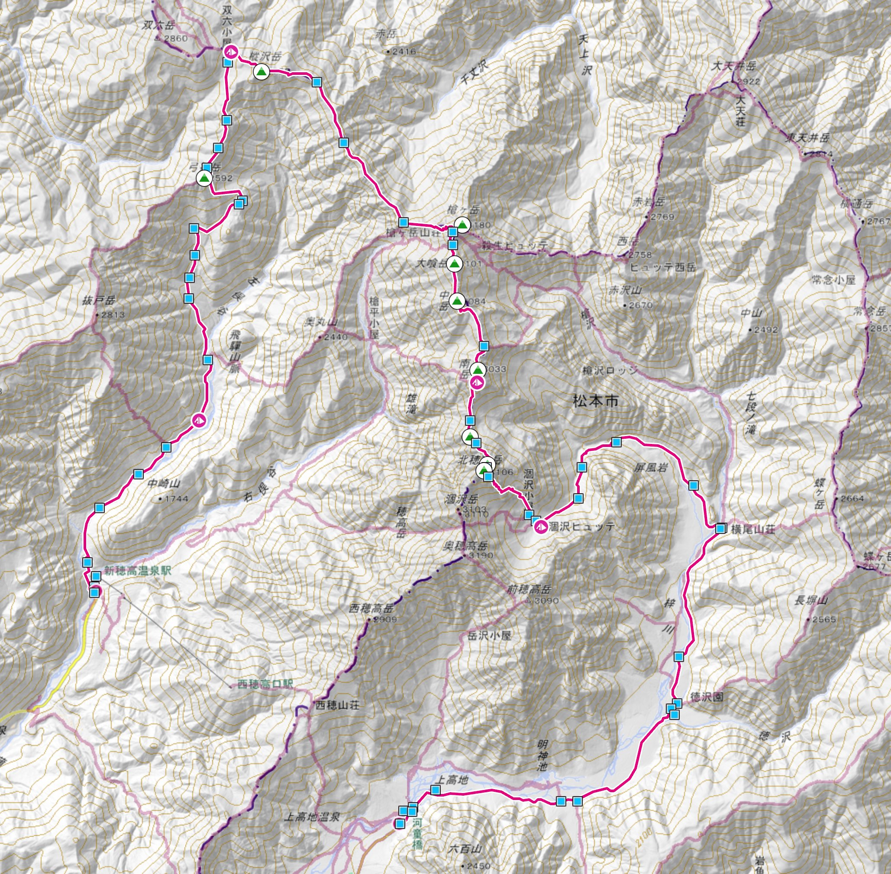
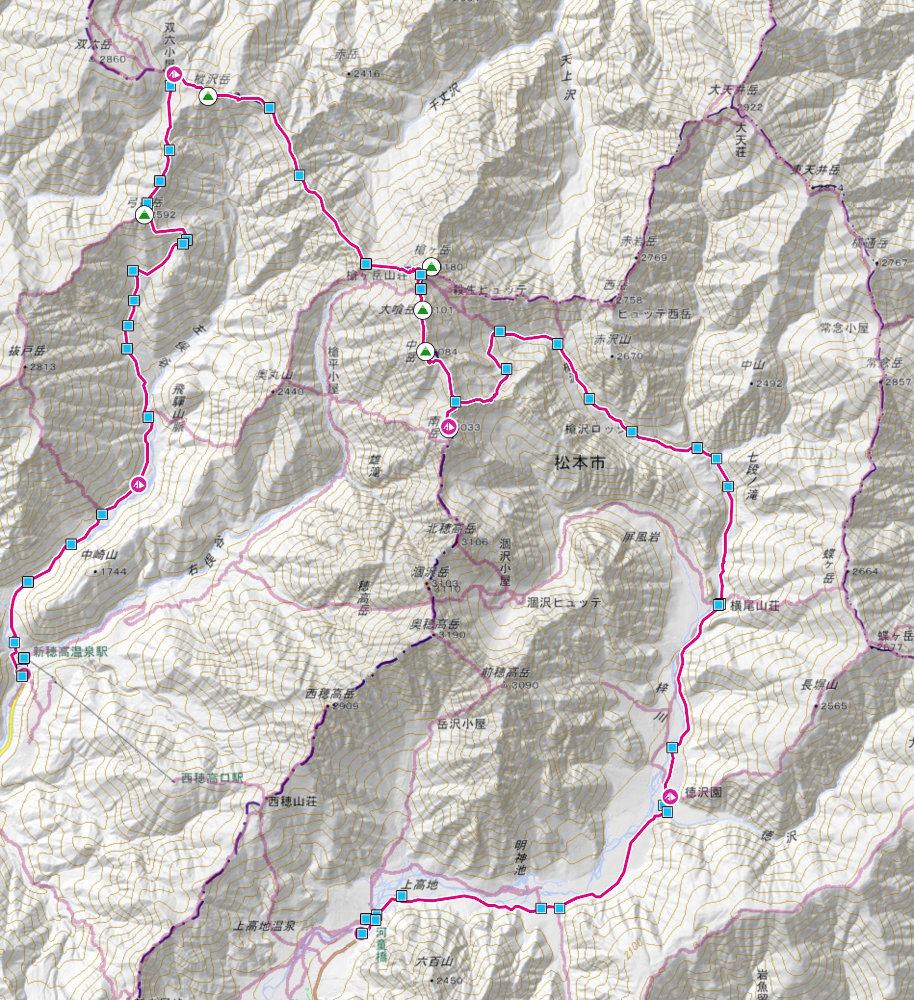
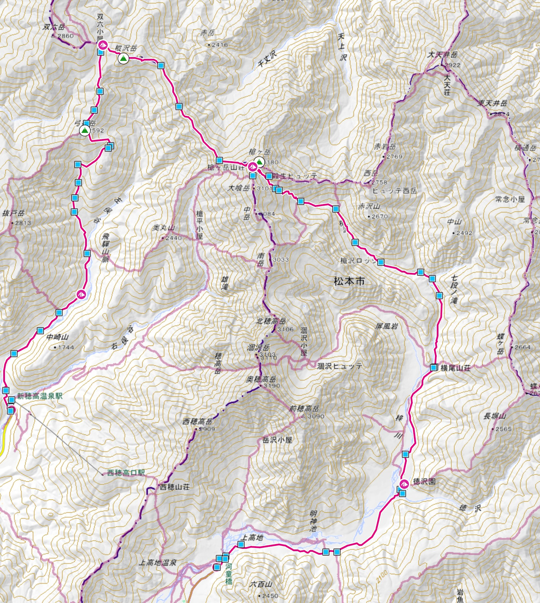

日本語
EN
Mountain Trekking Plan 2026
北アルプス縦走
双六岳・槍ヶ岳・大キレット・北穂高岳
7/30 – 8/3
2名・テント泊
核心：大キレット
🗺
プラン
⑃
分岐判断
⚠️
注意事項
🎒
装備
🆘
緊急
⚠️
大キレットを含む上級ルートです。天候・体調に応じてプランを切り替えてください。
Plan A
大キレット縦走
Plan B
槍沢エスケープ
Plan C
新穂高周回
🗺
ヤマレコ 登山計画を見る
地図・GPSルート・標高グラフ
↗

プランA ルート全体図（ヤマレコより）
7/30
移動日
わさび平小屋 泊（小屋）
移動手段
マイカー → 沢渡駐車場 → バス
バス
さわんど14:10発 → 平湯乗換 → 新穂高温泉着 約16:00
徒歩
新穂高 → わさび平小屋（約1.5時間）→ 17:30頃着
宿泊
わさび平小屋（小屋泊・翌日に備えて体力温存）
7/31
共通
新穂高 → 双六小屋
テント泊
通過点
鏡平山荘、弓折乗越
CT
7.0h
出発
5:00 AM
到着
13:00頃
8/1
共通
双六小屋 → 槍ヶ岳 → 南岳小屋
テント泊
通過点
双六岳、西鎌尾根、槍ヶ岳（3,180m）
CT
9.0h
出発
5:00 AM
到着
15:00頃
8/2
核心日
南岳小屋 → 大キレット → 涸沢
テント泊
通過点
大キレット、長谷川ピーク、北穂高岳
CT
7.0h
出発
5:00 AM ⚠️
到着
13:00頃
8/3
涸沢 → 上高地
下山・解散
通過点
本谷橋、横尾、徳沢
CT
4.5h
出発
6:00 AM
到着
11:30頃
🗺
ヤマレコ 登山計画を見る
地図・GPSルート・標高グラフ
↗

プランB ルート図（ヤマレコより）
7/30–8/1
プランAと同じ（わさび平小屋〜南岳小屋まで共通）
8/2
南岳小屋 → 天狗原 → 槍沢ロッヂ → 徳沢
テント泊
通過点
天狗原、天狗池、槍沢ロッヂ、横尾
CT
7.0h
出発
6:00 AM
到着
14:00頃
8/3
徳沢 → 上高地
下山・解散
通過点
明神
CT
1.5h
出発
8:00 AM
到着
9:30頃
🗺
ヤマレコ 登山計画を見る
地図・GPSルート・標高グラフ
↗

プランC ルート図（ヤマレコより）
7/30–7/31
プランAと同じ（わさび平小屋〜双六小屋まで共通）
8/1
双六小屋 → 槍ヶ岳山荘 or 殺生ヒュッテ
テント or 小屋泊（⚠️ 槍ヶ岳到着時点で判断）
通過点
双六岳、西鎌尾根、槍ヶ岳（3,180m）
判断基準
13時以降着 / 穂先で消耗 / どちらかが南岳進行に不安
CT
7.0h
出発
5:00 AM
到着
13:00頃
8/2
槍ヶ岳山荘 → 殺生ヒュッテ → 槍沢ロッヂ → 徳沢
テント泊
通過点
殺生ヒュッテ、槍沢ロッヂ、横尾
CT
6.0h
出発
7:00 AM
到着
14:00頃
8/3
徳沢 → 上高地
下山・解散
通過点
明神
CT
1.5h
出発
8:00 AM
到着
9:30頃
2段階の判断フロー
【第1判断】8/1 槍ヶ岳到着時点
槍ヶ岳到着時点でチェック
7/31 新穂高→双六 ／ 8/1 双六→西鎌尾根→槍ヶ岳
▼
→
南岳小屋へ進む（第2判断へ）
槍到着13時前 ＋ 2人とも余裕あり ＋ 穂先登頂後も体力残っている
C
プランC ─ 槍ヶ岳山荘 or 殺生ヒュッテ泊
13時以降着 ／ 穂先で予想以上に消耗 ／ どちらかが南岳進行に不安
【第2判断】8/1夜・南岳小屋にて
南岳小屋で翌日のプランを決定
前夜の天気予報 ＋ 2人の疲労感で判断
▼
A
プランA ─ 大キレット縦走
2人とも体力十分 ＋ 翌朝の天気予報が晴れ
B
プランB ─ 天狗原→槍沢下山
体力は十分 ＋ 天候不安定または不良予報
!
即プランB へ
天候不良 ＋ 疲労あり ／ どちらかが体調不良
タップで展開
全プラン共通
基本的な注意事項
▼
8月の北アルプスは15時頃から雷雨リスクが高まる。稜線上の行動は14時までに終えること。
各テント場は先着順。双六小屋・涸沢は特に混雑するため、14時前到着を目標に。
天気予報は「ヤマテン」または「tenki.jp 登山天気」で前夜と当日朝に必ず確認。
西鎌尾根〜南岳間は水場がほぼない。双六小屋で水2L以上を確保すること。
プランA 核心部
大キレット通過の注意
▼
南岳小屋を5:00に出発し、大キレットを午前中に通過完了することが最優先。
長谷川ピーク前後のナイフリッジはザックの重心に注意。2人の間隔を十分に開けて通過。
濡れた岩は難易度が大幅に上昇。前夜の予報で少しでも雨の可能性があればプランBへ。
鎖・ハシゴ通過時は落石に特に注意。上下方向の間隔を意識する。
プランB
天狗原経由・槍沢下山の注意
▼
南岳から天狗原への下降は一般登山道だが急傾斜。朝の体力があるうちに慎重に通過する。
槍ヶ岳山荘への登り返しがなく、前進しながら下山できる。心理的に大キレットを諦めやすい。
天狗池付近は晴れていれば槍ヶ岳の逆さ槍が見られる絶景ポイント。
徳沢テント場は梓川沿いの快適な環境。最終日をのんびり過ごせる。
プランC
槍ヶ岳山荘泊・槍沢下山の注意
▼
槍ヶ岳山荘のテント場は人気で狭く、満員の場合は殺生ヒュッテへ降りる。殺生ヒュッテは比較的余裕がある。
翌8/2は槍沢をゆっくり下るだけ。前日の消耗を翌日に持ち越さない余裕ある行動ができる。
徳沢テント場泊で8/3は最短1.5時間で上高地へ。帰路のバス・タクシー時間に余裕が生まれる。
🪨 岩場・安全装備
ヘルメット
大キレット通過時は着用必須。落石・スリップ時の頭部保護。
必携
グリップ系グローブ（薄手）
鎖場・岩場でのグリップ向上と怪我防止。
必携
🌧 雨天・防寒装備
レインウェア上下セパレート
ゴアテックス等の防水透湿素材。ポンチョは岩場で危険なので不可。
必携
防寒着（フリース or ダウン）
南岳小屋（3,032m）は朝晩10℃前後まで冷える。
必携
🎒 ザック・テント・寝具
ザック 45〜50L
大キレットでは重心管理が重要。50L以下が理想。
推奨
テント（自立式・軽量）
非自立式はペグが打てない岩稜帯のテント場で苦労する。
必携
シュラフ（快適温度5〜10℃）
高標高テント泊に対応したもの。南岳小屋（3,032m）は朝晩10℃前後まで冷える。
必携
スリーピングマット
岩稜帯のテント場は地面が硬く凹凸がある。断熱性のあるものを選ぶこと。
必携
💊 サポート・その他
モバイルバッテリー（5,000mAh以上）
ヤマテン・GPS・撮影を考慮。
推奨
行動食（多め）
特に8/1・8/2は多めに。疲労時の判断力維持に直結する。
必携
🆘 緊急連絡先
警察・山岳救助
110
長野県警山岳
0263-35-0110
岐阜県警
058-271-2424
🏠 山小屋連絡先
双六小屋
090-7869-0545
🌐 公式サイト / Official Website ↗
槍ヶ岳山荘
0263-35-7200
🌐 公式サイト / Official Website ↗
南岳小屋
090-2204-1917
🌐 公式サイト / Official Website ↗
北穂高小屋
090-1422-8886
🌐 公式サイト / Official Website ↗
🔗 参考リンク
Japan Travel — 槍ヶ岳ガイド（英語）
🌏 japan.travel — Yarigatake Hiking Course ↗
事前準備
登山届・保険について
▼
登山届はCompass（コンパス）から事前に提出すること。
山岳保険への加入を強く推奨。ヘリコプター救助費用は数十万円になることがある。
Garmin inReachなどの衛星通信デバイスがあれば携行すること。